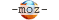

简介
CSS -- 层叠样式表(英文全称：Cascading Style Sheets)是一种用来表现HTML（标准通用标记语言的一个应用）或XML（标准通用标记语言的一个子集）等文件样式的计算机语言。CSS不仅可以静态地修饰网页，还可以配合各种脚本语言动态地对网页各元素进行格式化
CSS 能够对网页中元素位置的排版进行像素级精确控制，支持几乎所有的字体字号样式，拥有对网页对象和模型样式编辑的能力。
CSS 样式优先级:
- 浏览器缺省设置
- 外部样式表
- 内部样式表
- 内联样式
CSS 盒模型
-
元素总高度 = 外边距 + 边框 + 内边距 + 字大小 +/- (|行高 - 字大小|);行高大于字大小就加，反之则减。
-
元素总高度计算不包括轮廓，轮廓是浮动的，不占空间;这意味着如果轮廓比外边距还大，可能覆盖其它元素。
文本基线说明

因为默认使用 alphabetic 基线，所以上面的英文字母超出文本大小设置
| 值 | 描述 |
|---|---|
| alphabetic | 默认。文本基线是普通的字母基线。 |
| top | 文本基线是 em 方框的顶端。 |
| hanging | 文本基线是悬挂基线。 |
| middle | 文本基线是 em 方框的正中。 |
| ideographic | 文本基线是表意基线。 |
| bottom | 文本基线是 em 方框的底端。 |
Viewport
什么是 Viewport?
viewport 是用户网页的可视区域。
手机浏览器是把页面放在一个虚拟的"窗口"（viewport）中，通常这个虚拟的"窗口"（viewport）比屏幕宽，这样就不用把每个网页挤到很小的窗口中（这样会破坏没有针对手机浏览器优化的网页的布局），用户可以通过平移和缩放来看网页的不同部分。
设置 Viewport
一个常用的针对移动网页优化过的页面的 viewport meta 标签大致如下：
<meta name="viewport" content="width=device-width, initial-scale=1"> <meta name="viewport" content="width=device-width, initial-scale=1, maximum-scale=1, user-scalable=no">
- width：控制 viewport 的大小，可以指定的一个值，如果 600，或者特殊的值，如 device-width 为设备的宽度（单位为缩放为 100% 时的 CSS 的像素）。
- height：和 width 相对应，指定高度。
- initial-scale：初始缩放比例，也即是当页面第一次 load 的时候缩放比例。
- maximum-scale：允许用户缩放到的最大比例。
- minimum-scale：允许用户缩放到的最小比例。
- user-scalable：用户是否可以手动缩放。
网格视图
一个12 列的网格系统可以更好的控制响应式网页:更多写法参考 -- Bootstrap 栅格系统
/* 首先确保所有的 HTML 元素都有 box-sizing 属性且设置为 border-box。确保边距和边框包含在元素的宽度和高度间。*/
.my-grid * { box-sizing: border-box; }
.row:after { content: ""; clear: both; display: block; } /* 清除浮动 */
.my-grid [class*="col-"] { float: left; padding: 15px; }
.col-1 { width: 8.33%;}
.col-2 { width: 16.66%; }
.col-3 { width: 25%; }
.col-4 { width: 33.33%; }
.col-5 { width: 41.66%; }
.col-6 { width: 50%; }
.col-7 { width: 58.33%; }
.col-8 { width: 66.66%; }
.col-9 { width: 75%; }
.col-10 { width: 83.33%; }
.col-11 { width: 91.66%; }
.col-12 { width: 100%; }
.my-grid .header { background-color: #9933cc; color: #ffffff; padding: 15px; }
.my-grid .menu ul { list-style-type: none; margin: 0; padding: 0; }
.my-grid .menu li {
padding: 8px; margin-bottom: 7px; background-color: #33b5e5;
color: #ffffff;
box-shadow: 0 1px 3px rgba(0, 0, 0, 0.12), 0 1px 2px rgba(0, 0, 0, 0.24);
}
.my-grid .menu li:hover { background-color: #0099cc; }
Chania
The City
Chania is the capital of the Chania region on the island of Crete. The city can be divided in two parts, the old town and the modern city.
Resize the browser window to see how the content respond to the resizing.
媒体查询
使用 @media 查询，你可以针对不同的媒体类型定义不同的样式。
@media 可以针对不同的屏幕尺寸设置不同的样式，特别是如果你需要设置设计响应式的页面，@media 是非常有用的。
当你重置浏览器大小的过程中，页面也会根据浏览器的宽度和高度重新渲染页面。
/* 不同媒体类型使用不同的css代码 */
@media mediatype and|not|only (media feature) {
CSS-Code;
}
/* 不同媒体类型使用不同的css文件 */
<link rel="stylesheet" media="mediatype and|not|only (media feature)" href="mystylesheet.css">
媒体类型
| 值 | 描述 |
|---|---|
| all | 用于所有设备 |
| 用于打印机和打印预览 | |
| screen | 用于电脑屏幕，平板电脑，智能手机等。 |
| speech | 应用于屏幕阅读器等发声设备 |
媒体功能
| 值 | 描述 |
|---|---|
| aspect-ratio | 定义输出设备中的页面可见区域宽度与高度的比率 |
| color | 定义输出设备每一组彩色原件的个数。如果不是彩色设备，则值等于0 |
| color-index | 定义在输出设备的彩色查询表中的条目数。如果没有使用彩色查询表，则值等于0 |
| device-aspect-ratio | 定义输出设备的屏幕可见宽度与高度的比率。 |
| device-height | 定义输出设备的屏幕可见高度。 |
| device-width | 定义输出设备的屏幕可见宽度。 |
| grid | 用来查询输出设备是否使用栅格或点阵。 |
| height | 定义输出设备中的页面可见区域高度。 |
| max-aspect-ratio | 定义输出设备的屏幕可见宽度与高度的最大比率。 |
| max-color | 定义输出设备每一组彩色原件的最大个数。 |
| max-color-index | 定义在输出设备的彩色查询表中的最大条目数。 |
| max-device-aspect-ratio | 定义输出设备的屏幕可见宽度与高度的最大比率。 |
| max-device-height | 定义输出设备的屏幕可见的最大高度。 |
| max-device-width | 定义输出设备的屏幕最大可见宽度。 |
| max-height | 定义输出设备中的页面最大可见区域高度。 |
| max-monochrome | 定义在一个单色框架缓冲区中每像素包含的最大单色原件个数。 |
| max-resolution | 定义设备的最大分辨率。 |
| max-width | 定义输出设备中的页面最大可见区域宽度。 |
| min-aspect-ratio | 定义输出设备中的页面可见区域宽度与高度的最小比率。 |
| min-color | 定义输出设备每一组彩色原件的最小个数。 |
| min-color-index | 定义在输出设备的彩色查询表中的最小条目数。 |
| min-device-aspect-ratio | 定义输出设备的屏幕可见宽度与高度的最小比率。 |
| min-device-width | 定义输出设备的屏幕最小可见宽度。 |
| min-device-height | 定义输出设备的屏幕的最小可见高度。 |
| min-height | 定义输出设备中的页面最小可见区域高度。 |
| min-monochrome | 定义在一个单色框架缓冲区中每像素包含的最小单色原件个数 |
| min-resolution | 定义设备的最小分辨率。 |
| min-width | 定义输出设备中的页面最小可见区域宽度。 |
| monochrome | 定义在一个单色框架缓冲区中每像素包含的单色原件个数。如果不是单色设备，则值等于0 |
| orientation | 定义输出设备中的页面可见区域高度是否大于或等于宽度。 |
| resolution | 定义设备的分辨率。如：96dpi, 300dpi, 118dpcm |
| scan | 定义电视类设备的扫描工序。 |
| width | 定义输出设备中的页面可见区域宽度。 |
example
当
宽度 > 960px
时为一个样式，
768px < 宽度 < 960px
时是一个样式，
768px > 宽度
时，又是一个样式
.my-grid [class*="col-"] {
width: 100%;
}
@media only screen and (min-width: 768px) {
/* For tablets: */
.my-grid .col-m-12 {width: 8.33%;}
.my-grid .col-m-2 {width: 16.66%;}
.my-grid .col-m-3 {width: 25%;}
.my-grid .col-m-4 {width: 33.33%;}
.my-grid .col-m-5 {width: 41.66%;}
.my-grid .col-m-6 {width: 50%;}
.my-grid .col-m-7 {width: 58.33%;}
.my-grid .col-m-8 {width: 66.66%;}
.my-grid .col-m-9 {width: 75%;}
.my-grid .col-m-10 {width: 83.33%;}
.my-grid .col-m-11 {width: 91.66%;}
.my-grid .col-m-12 {width: 100%;}
}
@media only screen and (min-width: 960px) {
/* For desktop: */
.my-grid .col-1 {width: 8.33%;}
.my-grid .col-2 {width: 16.66%;}
.my-grid .col-3 {width: 25%;}
.my-grid .col-4 {width: 33.33%;}
.my-grid .col-5 {width: 41.66%;}
.my-grid .col-6 {width: 50%;}
.my-grid .col-7 {width: 58.33%;}
.my-grid .col-8 {width: 66.66%;}
.my-grid .col-9 {width: 75%;}
.my-grid .col-10 {width: 83.33%;}
.my-grid .col-11 {width: 91.66%;}
.my-grid .col-12 {width: 100%;}
}
Chania
The City
Chania is the capital of the Chania region on the island of Crete. The city can be divided in two parts, the old town and the modern city.
What?
Chania is a city on the island of Crete.
Where?
Crete is a Greek island in the Mediterranean Sea.
选择器
css code:
/* 1.设置所有元素文字颜色 */
#css-selector-examples * {
color: #993333;
}
/* 2.设置指定class元素文字颜色 */
#css-selector-examples .css-seletor-class>p {
color: #009e00;
}
/* 3.设置指定id元素文字颜色 */
#css-selector-examples #css-seletor-id>p {
color: #0a1a73;
}
/* 4.设置所有p元素文字大小 */
#css-selector-examples p {
font-size: 12px;
}
/* 5.同时设置多个元素 */
#css-selector-examples .first, #css-selector-examples .end {
color: #333333;
font-size: 16px;
}
/* 6.指定元素的子元素 */
#css-selector-examples #css-seletor-child p {
color: #05d0b8;
}
/* 7.同级的下一个指定元素文字颜色 */
#css-selector-examples #css-seletor-next+li>p {
color: #0a1a73;
}
/* 8.指定元素的直接子元素文字大小 */
#css-selector-examples #css-seletor-derect-child>p {
font-size: 14px;
}
/* 9.所有带有指定属性元素 */
#css-selector-examples [title] p {
color: #008f1c;
}
/* 10.所有带有指定属性和属性值的元素 */
#css-selector-examples [title="value"] p {
color: #a66902;
}
/* 11.所有带有指定属性,属性值包括指定单词的元素 */
#css-selector-examples [title~="test"] p {
color: #4f0038;
}
/* 12.选择一个指定属性的起始值为指定值的所有元素 */
#css-selector-examples [title|="my"] p {
color: #331ebb;
}
/* 12. */
/* 13. */
/* 14. */
/* 15. */
/* 16. */
/* 17. */
examples:
-
*-- 设置所有元素文字颜色 -
.class-- 设置指定class元素文字颜色 -
#id-- 设置指定id元素文字颜色 -
element-- 设置所有p元素文字大小 -
element,element-- 同时设置多个元素 -
element element-- 指定元素的子元素 -
element + element-- 同级的下一个指定元素文字颜色 -
element > element-- 指定元素的直接子元素文字大小 -
[attribute]-- 带有指定属性元素 -
[attribute=value]-- 所有带有指定属性和属性值的元素 -
[attribute~=word]-- 所有带有指定属性,属性值包括指定单词的元素 -
[attribute|=value]-- 选择一个指定属性的起始值为指定值的所有元素
| 选择器 | 示例 | 示例说明 | CSS |
|---|---|---|---|
| .class | .intro | 选择所有class="intro"的元素 | 1 |
| #id | #firstname | 选择所有id="firstname"的元素 | 1 |
| * | * | 选择所有元素 | 2 |
| element | p | 选择所有<p>元素 | 1 |
| element,element | div,p | 选择所有<div>元素和<p>元素 | 1 |
| element element | div p | 选择<div>元素内的所有<p>元素 | 1 |
| element>element | div>p | 选择所有父级是 <div> 元素的 <p> 元素 | 2 |
| element+element | div+p | 选择所有紧接着<div>元素之后的<p>元素 | 2 |
| [attribute] | [target] | 选择所有带有target属性元素 | 2 |
| [attribute=value] | [target=-blank] | 选择所有使用target="-blank"的元素 | 2 |
| [attribute~=value] | [title~=flower] | 选择标题属性包含单词"flower"的所有元素 | 2 |
| [attribute|=language] | [lang|=en] | 选择一个lang属性的起始值="EN"的所有元素 | 2 |
| :link | a:link | 选择所有未访问链接 | 1 |
| :visited | a:visited | 选择所有访问过的链接 | 1 |
| :active | a:active | 选择活动链接 | 1 |
| :hover | a:hover | 选择鼠标在链接上面时 | 1 |
| :focus | input:focus | 选择具有焦点的输入元素 | 2 |
| :first-letter | p:first-letter | 选择每一个<P>元素的第一个字母 | 1 |
| :first-line | p:first-line | 选择每一个<P>元素的第一行 | 1 |
| :first-child | p:first-child | 指定只有当<p>元素是其父级的第一个子级的样式。 | 2 |
| :before | p:before | 在每个<p>元素之前插入内容 | 2 |
| :after | p:after | 在每个<p>元素之后插入内容 | 2 |
| :lang(language) | p:lang(it) | 选择一个lang属性的起始值="it"的所有<p>元素 | 2 |
| element1~element2 | p~ul | 选择p元素之后的每一个ul元素 | 3 |
| [attribute^=value] | a[src^="https"] | 选择每一个src属性的值以"https"开头的元素 | 3 |
| [attribute$=value] | a[src$=".pdf"] | 选择每一个src属性的值以".pdf"结尾的元素 | 3 |
| [attribute*=value] | a[src*="runoob"] | 选择每一个src属性的值包含子字符串"runoob"的元素 | 3 |
| :first-of-type | p:first-of-type | 选择每个p元素是其父级的第一个p元素 | 3 |
| :last-of-type | p:last-of-type | 选择每个p元素是其父级的最后一个p元素 | 3 |
| :only-of-type | p:only-of-type | 选择每个p元素是其父级的唯一p元素 | 3 |
| :only-child | p:only-child | 选择每个p元素是其父级的唯一子元素 | 3 |
| :nth-child(n) | p:nth-child(2) | 选择每个p元素是其父级的第二个子元素 | 3 |
| :nth-last-child(n) | p:nth-last-child(2) | 选择每个p元素的是其父级的第二个子元素，从最后一个子项计数 | 3 |
| :nth-of-type(n) | p:nth-of-type(2) | 选择每个p元素是其父级的第二个p元素 | 3 |
| :nth-last-of-type(n) | p:nth-last-of-type(2) | 选择每个p元素的是其父级的第二个p元素，从最后一个子项计数 | 3 |
| :last-child | p:last-child | 选择每个p元素是其父级的最后一个子级。 | 3 |
| :root | :root | 选择文档的根元素 | 3 |
| :empty | p:empty | 选择每个没有任何子级的p元素（包括文本节点） | 3 |
| :target | #news:target | 选择当前活动的#news元素（包含该锚名称的点击的URL） | 3 |
| :enabled | input:enabled | 选择每一个已启用的输入元素 | 3 |
| :disabled | input:disabled | 选择每一个禁用的输入元素 | 3 |
| :checked | input:checked | 选择每个选中的输入元素 | 3 |
| :not(selector) | :not(p) | 选择每个并非p元素的元素 | 3 |
| ::selection | ::selection | 匹配元素中被用户选中或处于高亮状态的部分 | 3 |
| :out-of-range | :out-of-range | 匹配值在指定区间之外的input元素 | 3 |
| :in-range | :in-range | 匹配值在指定区间之内的input元素 | 3 |
| :read-write | :read-write | 用于匹配可读及可写的元素 | 3 |
| :read-only | :read-only | 用于匹配设置 "readonly"（只读） 属性的元素 | 3 |
| :optional | :optional | 用于匹配可选的输入元素 | 3 |
| :required | :required | 用于匹配设置了 "required" 属性的元素 | 3 |
| :valid | :valid | 用于匹配输入值为合法的元素 | 3 |
| :invalid | :invalid | 用于匹配输入值为非法的元素 | 3 |
动画属性
| 属性 | 描述 | CSS |
|---|---|---|
| @keyframes | 定义一个动画,@keyframes定义的动画名称用来被animation-name所使用。 | 3 |
| animation | 复合属性。检索或设置对象所应用的动画特效。 | 3 |
| animation-name | 检索或设置对象所应用的动画名称 ,必须与规则@keyframes配合使用，因为动画名称由@keyframes定义 | 3 |
| animation-duration | 检索或设置对象动画的持续时间 | 3 |
| animation-timing-function | 检索或设置对象动画的过渡类型 | 3 |
| animation-delay | 检索或设置对象动画的延迟时间 | 3 |
| animation-iteration-count | 检索或设置对象动画的循环次数 | 3 |
| animation-direction | 检索或设置对象动画在循环中是否反向运动 | 3 |
| animation-play-state | 检索或设置对象动画的状态 | 3 |
Hover.css 是一套基于 CSS3 的鼠标悬停效果和动画，这些可以非常轻松的被应用到按钮、LOGO 以及图片等元素。所有这些效果都是只需要单一的标签，必要的时候使用 before 和 after 伪元素。因为使用了 CSS3 过渡、转换和动画效果，因此只支持 Chrome、Firefox 和 Safari 等现代浏览器。
2D Transitions
Grow Shrink Pulse Pulse Grow Pulse Shrink Push Pop Bounce In Bounce Out Rotate Grow Rotate Float Sink Bob Hang Skew Skew Forward Skew Backward Wobble Horizontal Wobble Vertical Wobble To Bottom Right Wobble To Top Right Wobble Top Wobble Bottom Wobble Skew Buzz Buzz Out Forward BackwardBackground Transitions
Fade Back Pulse Sweep To Right Sweep To Left Sweep To Bottom Sweep To Top Bounce To Right Bounce To Left Bounce To Bottom Bounce To Top Radial Out Radial In Rectangle In Rectangle Out Shutter In Horizontal Shutter Out Horizontal Shutter In Vertical Shutter Out VerticalIcons
Icon Back Icon Forward Icon Down Icon Up Icon Spin Icon Drop Icon Fade Icon Float Away Icon Sink Away Icon Grow Icon Shrink Icon Pulse Icon Pulse Grow Icon Pulse Shrink Icon Push Icon Pop Icon Bounce Icon Rotate Icon Grow Rotate Icon Float Icon Sink Icon Bob Icon Hang Icon Wobble Horizontal Icon Wobble Vertical Icon Buzz Icon Buzz OutBorder Transitions
Border Fade Hollow Trim Ripple Out Ripple In Outline Out Outline In Round Corners Underline From Left Underline From Center Underline From Right Reveal Underline Reveal Overline Reveal Overline From Left Overline From Center Overline From RightShadow and Glow Transitions
Shadow Grow Shadow Float Shadow Glow Shadow Radial Box Shadow Outset Box Shadow InsetSpeech Bubbles
Bubble Top Bubble Right Bubble Bottom Bubble Left Bubble Float Top Bubble Float Right Bubble Float Bottom Bubble Float LeftCurls
Curl Top Left Curl Top Right Curl Bottom Right Curl Bottom Left背景属性
| 属性 | 描述 | CSS |
|---|---|---|
| background | 复合属性。设置对象的背景特性。 | 1 |
| background-attachment | 设置或检索背景图像是随对象内容滚动还是固定的。必须先指定background-image属性。 | 1 |
| background-color | 设置或检索对象的背景颜色。 | 1 |
| background-image | 设置或检索对象的背景图像。 | 1 |
| background-position | 设置或检索对象的背景图像位置。必须先指定background-image属性。 | 1 |
| background-repeat | 设置或检索对象的背景图像如何铺排填充。必须先指定background-image属性。 | 1 |
| background-clip | 指定对象的背景图像向外裁剪的区域。 | 3 |
| background-origin | S设置或检索对象的背景图像计算background-position时的参考原点(位置)。 | 3 |
| background-size | 检索或设置对象的背景图像的尺寸大小。 | 3 |
边框和轮廓属性
| 属性 | 描述 | CSS |
|---|---|---|
| border | 复合属性。设置对象边框的特性。 | 1 |
| border-bottom | 复合属性。设置对象底部边框的特性。 | 1 |
| border-bottom-color | 设置或检索对象的底部边框颜色。 | 1 |
| border-bottom-style | 设置或检索对象的底部边框样式。 | 1 |
| border-bottom-width | 设置或检索对象的底部边框宽度。 | 1 |
| border-color | 置或检索对象的边框颜色。 | 1 |
| border-left | 复合属性。设置对象左边边框的特性。 | 1 |
| border-left-color | 设置或检索对象的左边边框颜色。 | 1 |
| border-left-style | 设置或检索对象的左边边框样式。 | 1 |
| border-left-width | 设置或检索对象的左边边框宽度。 | 1 |
| border-right | 复合属性。设置对象右边边框的特性。 | 1 |
| border-right-color | 设置或检索对象的右边边框颜色。 | 1 |
| border-right-style | 设置或检索对象的右边边框样式。 | 1 |
| border-right-width | 设置或检索对象的右边边框宽度。 | 1 |
| border-style | 设置或检索对象的边框样式。 | 1 |
| border-top | 复合属性。设置对象顶部边框的特性。 | 1 |
| border-top-color | 设置或检索对象的顶部边框颜色 | 1 |
| border-top-style | 设置或检索对象的顶部边框样式。 | 1 |
| border-top-width | 设置或检索对象的顶部边框宽度。 | 1 |
| border-width | 设置或检索对象的边框宽度。 | 1 |
| outline | 复合属性。设置或检索对象外的线条轮廓。 | 2 |
| outline-color | 设置或检索对象外的线条轮廓的颜色。 | 2 |
| outline-style | 设置或检索对象外的线条轮廓的样式。 | 2 |
| outline-width | 设置或检索对象外的线条轮廓的宽度。 | 2 |
| border-bottom-left-radius | 设置或检索对象的左下角圆角边框。提供2个参数，2个参数以空格分隔，每个参数允许设置1个参数值，第1个参数表示水平半径，第2个参数表示垂直半径，如第2个参数省略，则默认等于第1个参数 | 3 |
| border-bottom-right-radius | 设置或检索对象的右下角圆角边框。 | 3 |
| border-image | 设置或检索对象的边框样式使用图像来填充。 | 3 |
| border-image-outset | 规定边框图像超过边框的量。 | 3 |
| border-image-repeat | 规定图像边框是否应该被重复（repeated）、拉伸（stretched）或铺满（rounded）。 | 3 |
| border-image-slice | 规定图像边框的向内偏移。 | 3 |
| border-image-source | 规定要使用的图像，代替 border-style 属性中设置的边框样式。 | 3 |
| border-image-width | 规定图像边框的宽度。 | 3 |
| border-radius | 设置或检索对象使用圆角边框。 | 3 |
| border-top-left-radius | 定义左上角边框的形状。 | 3 |
| border-top-right-radius | 定义右下角边框的形状。 | 3 |
| box-decoration-break | 规定行内元素被折行 | 3 |
| box-shadow | 向方框添加一个或多个阴影。 | 3 |
框属性
| 属性 | 描述 | CSS |
|---|---|---|
| overflow-x | 如果内容溢出了元素内容区域，是否对内容的左/右边缘进行裁剪。 | 3 |
| overflow-y | 如果内容溢出了元素内容区域，是否对内容的上/下边缘进行裁剪。 | 3 |
| overflow-style | 规定溢出元素的首选滚动方法。 | 3 |
| rotation | 围绕由 rotation-point 属性定义的点对元素进行旋转。 | 3 |
| rotation-point | 定义距离上左边框边缘的偏移点。 | 3 |
颜色属性
| 属性 | 描述 | CSS |
|---|---|---|
| color-profile | 允许使用源的颜色配置文件的默认以外的规范 | 3 |
| opacity | 设置一个元素的透明度级别 | 3 |
| rendering-intent | 允许超过默认颜色配置文件渲染意向的其他规范 | 3 |
内容页的媒体属性
| 属性 | 说明 | CSS |
|---|---|---|
| bookmark-label | 指定书签的标签 | 3 |
| bookmark-level | 指定了书签级别 | 3 |
| bookmark-target | 指定了书签链接的目标 | 3 |
| float-offset | 在相反的方向推动浮动元素，他们一直具有浮动 | 3 |
| hyphenate-after | 指定一个断字的单词断字字符后的最少字符数 | 3 |
| hyphenate-before | 指定一个断字的单词断字字符前的最少字符数 | 3 |
| hyphenate-character | 指定了当一个断字发生时，要显示的字符串 | 3 |
| hyphenate-lines | 表示连续断字的行在元素的最大数目 | 3 |
| hyphenate-resource | 外部资源指定一个逗号分隔的列表，可以帮助确定浏览器的断字点 | 3 |
| hyphens | 设置如何分割单词以改善该段的布局 | 3 |
| image-resolution | 指定了正确的图像分辨率 | 3 |
| marks | 将crop and/or cross标志添加到文档 | 3 |
| string-set | 3 |
尺寸属性
| 属性 | 描述 | CSS |
|---|---|---|
| height | 设置元素的高度 | 1 |
| max-height | 设置元素的最大高度 | 2 |
| max-width | 设置元素的最大宽度 | 2 |
| min-height | 设置元素的最小高度 | 2 |
| min-width | 设置元素的最小宽度 | 2 |
| width | 设置元素的宽度 | 1 |
弹性盒子模型(新)属性
| 属性 | 说明 | CSS |
|---|---|---|
| flex | 复合属性。设置或检索弹性盒模型对象的子元素如何分配空间。 | 3 |
| flex-grow | 设置或检索弹性盒的扩展比率。 | 3 |
| flex-shrink | 设置或检索弹性盒的收缩比率。 | 3 |
| flex-basis | 设置或检索弹性盒伸缩基准值。 | 3 |
| flex-flow | 复合属性。设置或检索弹性盒模型对象的子元素排列方式。 | 3 |
| flex-direction | 该属性通过定义flex容器的主轴方向来决定felx子项在flex容器中的位置。 | 3 |
| flex-wrap | 该属性控制flex容器是单行或者多行，同时横轴的方向决定了新行堆叠的方向。 | 3 |
| align-content | 在弹性容器内的各项没有占用交叉轴上所有可用的空间时对齐容器内的各项（垂直）。 | 3 |
| align-items | 定义flex子项在flex容器的当前行的侧轴（纵轴）方向上的对齐方式。 | 3 |
| align-self | 定义flex子项单独在侧轴（纵轴）方向上的对齐方式。 | 3 |
| justify-content | 设置或检索弹性盒子元素在主轴（横轴）方向上的对齐方式。 | 3 |
| order | 设置或检索弹性盒模型对象的子元素出现的順序。 | 3 |
弹性盒子模型(旧)属性
| 属性 | 说明 | CSS |
|---|---|---|
| box-align | 指定如何对齐一个框的子元素 | 3 |
| box-direction | 指定在哪个方向，显示一个框的子元素 | 3 |
| box-flex | 指定一个框的子元素是否是灵活的或固定的大小 | 3 |
| box-flex-group | 指派灵活的元素到Flex组 | 3 |
| box-lines | 每当它在父框的空间运行时，是否指定将再上一个新的行列 | 3 |
| box-ordinal-group | 指定一个框的子元素的显示顺序 | 3 |
| box-orient | 指定一个框的子元素是否在水平或垂直方向应铺设 | 3 |
| box-pack | 指定横向盒在垂直框的水平位置和垂直位置 | 3 |
字体属性
| 属性 | 说明 | CSS |
|---|---|---|
| font | 在一个声明中设置所有字体属性 | 1 |
| font-family | 规定文本的字体系列 | 1 |
| font-size | 规定文本的字体尺寸 | 1 |
| font-style | 规定文本的字体样式 | 1 |
| font-variant | 规定文本的字体样式 | 1 |
| font-weight | 规定字体的粗细 | 1 |
| @font-face | 一个规则，允许网站下载并使用其他超过"Web- safe"字体的字体 | 3 |
| font-size-adjust | 为元素规定 aspect 值 | 3 |
| font-stretch | 收缩或拉伸当前的字体系列 | 3 |
内容生成属性
| 属性 | 说明 | CSS |
|---|---|---|
| content | 与 :before 以及 :after 伪元素配合使用，来插入生成内容 | 2 |
| counter-increment | 递增或递减一个或多个计数器 | 2 |
| counter-reset | 创建或重置一个或多个计数器 | 2 |
| quotes | 设置嵌套引用的引号类型 | 2 |
| crop | 允许replaced元素只是作为一个对象代替整个对象的矩形区域 | 3 |
| move-to | Causes an element to be removed from the flow and reinserted at a later point in the document | 3 |
| page-policy | 判定基于页面的给定元素的适用于计数器的字符串值 | 3 |
网格属性
| 属性 | 说明 | CSS |
|---|---|---|
| grid-columns | 指定在网格中每列的宽度 | 3 |
| grid-rows | 指定在网格中每列的高度 | 3 |
超链接属性
| 属性 | 说明 | CSS |
|---|---|---|
| target | 简写属性设置target-name, target-new,和target-position属性 | 3 |
| target-name | 指定在何处打开链接（目标位置） | 3 |
| target-new | 指定是否有新的目标链接打开一个新窗口或在现有窗口打开新标签 | 3 |
| target-position | 指定应该放置新的目标链接的位置 | 3 |
线框属性
| 属性 | 说明 | CSS |
|---|---|---|
| alignment-adjust | 允许更精确的元素的对齐方式 | 3 |
| alignment-baseline | 其父级指定的内联级别的元素如何对齐 | 3 |
| baseline-shift | 允许重新定位相对于dominant-baseline的dominant-baseline | 3 |
| dominant-baseline | 指定scaled-baseline-table | 3 |
| drop-initial-after-adjust | 设置下拉的主要连接点的初始对齐点 | 3 |
| drop-initial-after-align | 校准行内的初始行的设置就是具有首字母的框使用初级连接点 | 3 |
| drop-initial-before-adjust | 设置下拉的辅助连接点的初始对齐点 | 3 |
| drop-initial-before-align | 校准行内的初始行的设置就是具有首字母的框使用辅助连接点 | 3 |
| drop-initial-size | 控制局部的首字母下沉 | 3 |
| drop-initial-value | 激活一个下拉式的初步效果 | 3 |
| inline-box-align | 设置一个多行的内联块内的行具有前一个和后一个内联元素的对齐 | 3 |
| line-stacking | 一个速记属性设置line-stacking-strategy, line-stacking-ruby,和line-stacking-shift属性 | 3 |
| line-stacking-ruby | 设置包含Ruby注释元素的行对于块元素的堆叠方法 | 3 |
| line-stacking-shift | 设置base-shift行中块元素包含元素的堆叠方法 | 3 |
| line-stacking-strategy | 设置内部包含块元素的堆叠线框的堆叠方法 | 3 |
| text-height | 行内框的文本内容区域设置block-progression维数 | 3 |
列表属性
| 属性 | 说明 | CSS |
|---|---|---|
| list-style | 在一个声明中设置所有的列表属性 | 1 |
| list-style-image | 将图象设置为列表项标记 | 1 |
| list-style-position | 设置列表项标记的放置位置 | 1 |
| list-style-type | 设置列表项标记的类型 | 1 |
外边距属性
| 属性 | 说明 | CSS |
|---|---|---|
| margin | 在一个声明中设置所有外边距属性 | 1 |
| margin-bottom | 设置元素的下外边距 | 1 |
| margin-left | 设置元素的左外边距 | 1 |
| margin-right | 设置元素的右外边距 | 1 |
| margin-top | 设置元素的上外边距 | 1 |
字幕属性
| 属性 | 说明 | CSS |
|---|---|---|
| marquee-direction | 设置内容移动的方向 | 3 |
| marquee-play-count | 设置内容移动多少次 | 3 |
| marquee-speed | 设置内容滚动的速度有多快 | 3 |
| marquee-style | 设置内容移动的样式 | 3 |
多列属性
| 属性 | 说明 | CSS |
|---|---|---|
| column-count | 指定元素应该分为的列数 | 3 |
| column-fill | 指定如何填充列 | 3 |
| column-gap | 指定列之间的差距 | 3 |
| column-rule | 对于设置所有column-rule-*属性的简写属性 | 3 |
| column-rule-color | 指定列之间的颜色规则 | 3 |
| column-rule-style | 指定列之间的样式规则 | 3 |
| column-rule-width | 指定列之间的宽度规则 | 3 |
| column-span | 指定元素应该跨越多少列 | 3 |
| column-width | 指定列的宽度 | 3 |
| columns | 缩写属性设置列宽和列数 | 3 |
内边距属性
| 属性 | 说明 | CSS |
|---|---|---|
| padding | 在一个声明中设置所有填充属性 | 1 |
| padding-bottom | 设置元素的底填充 | 1 |
| padding-left | 设置元素的左填充 | 1 |
| padding-right | 设置元素的右填充 | 1 |
| padding-top | 设置元素的顶部填充 | 1 |
页面媒体属性
| 属性 | 思念 | CSS |
|---|---|---|
| fit | 如果其宽度和高度属性都不是auto给出一个提示，如何大规模替换元素 | 3 |
| fit-position | 判定方框内对象的对齐方式 | 3 |
| image-orientation | 指定用户代理适用于图像中的向右或顺时针方向的旋转 | 3 |
| page | 指定一个元素应显示的页面的特定类型 | 3 |
| size | 指定含有BOX的页面内容的大小和方位 | 3 |
定位属性
CSS 有三种基本的定位机制：普通流、浮动和绝对定位。
除非专门指定，否则所有框都在普通流中定位。也就是说，普通流中的元素的位置由元素在 (X)HTML 中的位置决定。
块级框从上到下一个接一个地排列，框之间的垂直距离是由框的垂直外边距计算出来。
行内框在一行中水平布置。可以使用水平内边距、边框和外边距调整它们的间距。但是，垂直内边距、边框和外边距不影响行内框的高度。由一行形成的水平框称为行框（Line Box），行框的高度总是足以容纳它包含的所有行内框。不过，设置行高可以增加这个框的高度。
CSS 为定位和浮动提供了一些属性，利用这些属性，可以建立列式布局，将布局的一部分与另一部分重叠，还可以完成多年来通常需要使用多个表格才能完成的任务。
CSS 定位实例： CSS 定位实例
定位元素
| 属性 | 说明 | CSS |
|---|---|---|
| bottom | 设置定位元素下外边距边界与其包含块下边界之间的偏移 | 2 |
| clear | 规定元素的哪一侧不允许其他浮动元素 | 1 |
| clip | 剪裁绝对定位元素 | 2 |
| cursor | 规定要显示的光标的类型（形状） | 2 |
| display | 规定元素应该生成的框的类型 | 1 |
| float | 规定框是否应该浮动 | 1 |
| left | 设置定位元素左外边距边界与其包含块左边界之间的偏移 | 2 |
| overflow |
规定当内容溢出元素框时发生的事情 | 2 |
| position | 规定元素的定位类型 | 2 |
| right | 设置定位元素右外边距边界与其包含块右边界之间的偏移 | 2 |
| top | 设置定位元素的上外边距边界与其包含块上边界之间的偏移 | 2 |
| visibility | 规定元素是否可见 | 2 |
| z-index | 设置元素的堆叠顺序 | 2 |
position 属性值
| 值 | 描述 |
|---|---|
| absolute |
生成绝对定位的元素，相对于 static 定位以外的第一个父元素进行定位。 元素的位置通过 "left", "top", "right" 以及 "bottom" 属性进行规定。 |
| fixed |
生成绝对定位的元素，相对于浏览器窗口进行定位。 元素的位置通过 "left", "top", "right" 以及 "bottom" 属性进行规定。 |
| relative |
生成相对定位的元素，相对于其正常位置进行定位。 因此，"left:20" 会向元素的 LEFT 位置添加 20 像素。 |
| static | 默认值。没有定位，元素出现在正常的流中（忽略 top, bottom, left, right 或者 z-index 声明）。 |
| inherit | 规定应该从父元素继承 position 属性的值。 |
display 属性值
| 值 | 描述 |
|---|---|
| none | 此元素不会被显示。 |
| block | 此元素将显示为块级元素，此元素前后会带有换行符。 |
| inline | 默认。此元素会被显示为内联元素，元素前后没有换行符。 |
| inline-block | 行内块元素。（CSS2.1 新增的值） |
| list-item | 此元素会作为列表显示。 |
| run-in | 此元素会根据上下文作为块级元素或内联元素显示。 |
| compact | CSS 中有值 compact，不过由于缺乏广泛支持，已经从 CSS2.1 中删除。 |
| marker | CSS 中有值 marker，不过由于缺乏广泛支持，已经从 CSS2.1 中删除。 |
| table | 此元素会作为块级表格来显示（类似 <table>），表格前后带有换行符。 |
| inline-table | 此元素会作为内联表格来显示（类似 <table>），表格前后没有换行符。 |
| table-row-group | 此元素会作为一个或多个行的分组来显示（类似 <tbody>）。 |
| table-header-group | 此元素会作为一个或多个行的分组来显示（类似 <thead>）。 |
| table-footer-group | 此元素会作为一个或多个行的分组来显示（类似 <tfoot>）。 |
| table-row | 此元素会作为一个表格行显示（类似 <tr>）。 |
| table-column-group | 此元素会作为一个或多个列的分组来显示（类似 <colgroup>）。 |
| table-column | 此元素会作为一个单元格列显示（类似 <col>） |
| table-cell | 此元素会作为一个表格单元格显示（类似 <td> 和 <th>） |
| table-caption | 此元素会作为一个表格标题显示（类似 <caption>） |
| inherit | 规定应该从父元素继承 display 属性的值。 |
分页属性
| 属性 | 说明 | CSS |
|---|---|---|
| orphans | 设置当元素内部发生分页时必须在页面底部保留的最少行数 | 2 |
| page-break-after | 设置元素后的分页行为 | 2 |
| page-break-before | 设置元素前的分页行为 | 2 |
| page-break-inside | 设置元素内部的分页行为 | 2 |
| widows | 设置当元素内部发生分页时必须在页面顶部保留的最少行数 | 2 |
Ruby属性
| 属性 | 说明 | CSS |
|---|---|---|
| ruby-align | 控制Ruby文本和Ruby基础内容相对彼此的文本对齐方式 | 3 |
| ruby-overhang | 当Ruby文本超过Ruby的基础宽，确定ruby文本是否允许局部悬置任意相邻的文本，除了自己的基础 | 3 |
| ruby-position | 它的base控制Ruby文本的位置 | 3 |
| ruby-span | 控制annotation 元素的跨越行为 | 3 |
语音属性
| 属性 | 说明 | CSS |
|---|---|---|
| mark | 缩写属性设置mark-before和mark-after属性 | 3 |
| mark-after | 允许命名的标记连接到音频流 | 3 |
| mark-before | 允许命名的标记连接到音频流 | 3 |
| phonemes | 指定包含文本的相应元素中的一个音标发音 | 3 |
| rest | 一个缩写属性设置rest-before和rest-after属性 | 3 |
| rest-after | 一个元素的内容讲完之后，指定要休息一下或遵守韵律边界 | 3 |
| rest-before | 一个元素的内容讲完之前，指定要休息一下或遵守韵律边界 | 3 |
| voice-balance | 指定了左，右声道之间的平衡 | 3 |
| voice-duration | 指定应采取呈现所选元素的内容的长度 | 3 |
| voice-pitch | 指定平均说话的声音的音调（频率） | 3 |
| voice-pitch-range | 指定平均间距的变化 | 3 |
| voice-rate | 控制语速 | 3 |
| voice-stress | 指示着重力度 | 3 |
| voice-volume | 语音合成是指波形输出幅度 | 3 |
表格属性
| 属性 | 说明 | CSS |
|---|---|---|
| border-collapse | 规定是否合并表格边框 | 2 |
| border-spacing | 规定相邻单元格边框之间的距离 | 2 |
| caption-side | 规定表格标题的位置 | 2 |
| empty-cells | 规定是否显示表格中的空单元格上的边框和背景 | 2 |
| table-layout | 设置用于表格的布局算法 | 2 |
文本属性
| 属性 | 说明 | CSS |
|---|---|---|
| color | 设置文本的颜色 | 1 |
| direction | 规定文本的方向 / 书写方向 | 2 |
| letter-spacing | 设置字符间距 | 1 |
| line-height | 设置行高 | 1 |
| text-align | 规定文本的水平对齐方式 | 1 |
| text-decoration | 规定添加到文本的装饰效果 | 1 |
| text-indent | 规定文本块首行的缩进 | 1 |
| text-transform | 控制文本的大小写 | 1 |
| unicode-bidi | 2 | |
| vertical-align | 设置元素的垂直对齐方式 | 1 |
| white-space | 设置怎样给一元素控件留白 | 1 |
| word-spacing | 设置单词间距 | 1 |
| text-emphasis | 向元素的文本应用重点标记以及重点标记的前景色。 | 1 |
| hanging-punctuation | 指定一个标点符号是否可能超出行框 | 3 |
| punctuation-trim | 指定一个标点符号是否要去掉 | 3 |
| text-align-last | 当 text-align 设置为 justify 时，最后一行的对齐方式。 | 3 |
| text-justify | 当 text-align 设置为 justify 时指定分散对齐的方式。 | 3 |
| text-outline | 设置文字的轮廓。 | 3 |
| text-overflow | 指定当文本溢出包含的元素，应该发生什么 | 3 |
| text-shadow | 为文本添加阴影 | 3 |
| text-wrap | 指定文本换行规则 | 3 |
| word-break | 指定非CJK文字的断行规则 | 3 |
| word-wrap | 设置浏览器是否对过长的单词进行换行。 | 3 |
2D/3D 转换属性
| 属性 | 说明 | CSS |
|---|---|---|
| transform | 适用于2D或3D转换的元素 | 3 |
| transform-origin | 允许您更改转化元素位置 | 3 |
| transform-style | 3D空间中的指定如何嵌套元素 | 3 |
| perspective | 指定3D元素是如何查看透视图 | 3 |
| perspective-origin | 指定3D元素底部位置 | 3 |
| backface-visibility | 定义一个元素是否应该是可见的，不对着屏幕时 | 3 |
过渡属性
| 属性 | 说明 | CSS |
|---|---|---|
| transition | 此属性是 transition-property、transition-duration、transition-timing-function、transition-delay 的简写形式。 | 3 |
| transition-property | 设置用来进行过渡的 CSS 属性。 | 3 |
| transition-duration | 设置过渡进行的时间长度。 | 3 |
| transition-timing-function | 设置过渡进行的时序函数。 | 3 |
| transition-delay | 指定过渡开始的时间。 | 3 |
用户界面属性
| 属性 | 说明 | CSS |
|---|---|---|
| appearance | 定义元素的外观样式 | 3 |
| box-sizing | 允许您为了适应区域以某种方式定义某些元素 | 3 |
| icon | 为元素指定图标 | 3 |
| nav-down | 指定用户按向下键时向下导航的位置 | 3 |
| nav-index | 指定导航（tab）顺序。 | 3 |
| nav-left | 指定用户按向左键时向左导航的位置 | 3 |
| nav-right | 指定用户按向右键时向左导航的位置 | 3 |
| nav-up | 指定用户按向上键时向上导航的位置a | 3 |
| outline-offset | 设置轮廓框架在 border 边缘外的偏移 | 3 |
| resize | 定义元素是否可以改变大小 | 3 |
CSS 单位
相对长度
| 单位 | 描述 |
|---|---|
| em | 它是描述相对于应用在当前元素的字体尺寸，所以它也是相对长度单位。一般浏览器字体大小默认为16px，则2em == 32px； |
| ex | 依赖于英文子母小 x 的高度 |
| ch | 数字 0 的宽度 |
| rem | 根元素（html）的 font-size |
| vw | viewpoint width，视窗宽度，1vw=视窗宽度的1% |
| vh | viewpoint height，视窗高度，1vh=视窗高度的1% |
| vmin | vw和vh中较小的那个。 |
| vmax | vw和vh中较大的那个。 |
| % |
绝对长度
| 单位 | 描述 |
|---|---|
| cm | 厘米 |
| mm | 毫米 |
| in | 英寸 (1in = 96px = 2.54cm) |
| px * | 像素 (1px = 1/96th of 1in) |
| pt | point，大约1/72英寸； (1pt = 1/72in) |
| pc | pica，大约6pt，1/6英寸； (1pc = 12 pt) |
CSS3 浏览器支持
| 属性 | IE | Firefox | Chrome | Safari | Opera |
|---|---|---|---|---|---|
| alignment-adjust | |||||
| alignment-baseline | |||||
| @keyframes | 10 | 16 | 12.1 | ||
| animation | 10 | 16 | 12.1 | ||
| animation-name | 10 | 16 | 12.1 | ||
| animation-duration | 10 | 16 | 12.1 | ||
| animation-timing-function | 10 | 16 | 12.1 | ||
| animation-delay | 10 | 16 | 12.1 | ||
| animation-iteration-count | 10 | 16 | 12.1 | ||
| animation-direction | 10 | 16 | 12.1 | ||
| animation-play-state | 10 | 16 | 12.1 | ||
| appearance | 3 | ||||
| backface-visibility | 10 | ||||
| background-clip | 9 | 4 | 4 | 5 | 10.5 |
| background-origin | 9 | 4 | 4 | 5 | 10.5 |
| background-size | 9 | 4 | 4 | 5 | 10.5 |
| baseline-shift | |||||
| bookmark-label | |||||
| bookmark-level | |||||
| bookmark-target | |||||
| border-bottom-left-radius | 9 | 4 | 5 | 5 | 10.5 |
| border-bottom-right-radius | 9 | 4 | 5 | 5 | 10.5 |
| border-image | 15 | 16 | 6 | 11 | |
| border-image-outset | |||||
| border-image-repeat | |||||
| border-image-slice | |||||
| border-image-source | |||||
| border-image-width | |||||
| border-radius | 9 | 4 | 5 | 5 | 10.5 |
| border-top-left-radius | 9 | 4 | 5 | 5 | 10.5 |
| border-top-right-radius | 9 | 4 | 5 | 5 | 10.5 |
| box-decoration-break | |||||
| box-align | |||||
| box-direction | |||||
| box-flex | 12.1 | ||||
| box-flex-group | |||||
| box-lines | |||||
| box-ordinal-group | |||||
| box-orient | |||||
| box-pack | |||||
| box-shadow | 9 | 4 | 10 | 5.1 | 10.5 |
| box-sizing | 8 | 10 | 5.1 | 9.5 | |
| color-profile | |||||
| column-fill | |||||
| column-gap | 10 | 11.1 | |||
| column-rule | 10 | 11.1 | |||
| column-rule-color | 10 | 11.1 | |||
| column-rule-style | 10 | 11.1 | |||
| column-rule-width | 10 | 11.1 | |||
| column-span | 10 | 11.1 | |||
| column-width | 10 | 11.1 | |||
| columns | 10 | 11.1 | |||
| column-count | 10 | 11.1 | |||
| crop | |||||
| dominant-baseline | |||||
| drop-initial-after-adjust | |||||
| drop-initial-after-align | |||||
| drop-initial-before-adjust | |||||
| drop-initial-before-align | |||||
| drop-initial-size | |||||
| drop-initial-value | |||||
| fit | |||||
| fit-position | |||||
| float-offset | |||||
| @font-face | 9 | 3.6 | 4 | 3 | 10 |
| font-size-adjust | 2 | ||||
| font-stretch | |||||
| grid-columns | |||||
| grid-rows | |||||
| hanging-punctuation | |||||
| hyphenate-after | |||||
| hyphenate-before | |||||
| hyphenate-characters | |||||
| hyphenate-lines | |||||
| hyphenate-resource | |||||
| hyphens | |||||
| icon | |||||
| image-orientation | |||||
| image-resolution | |||||
| inline-box-align | |||||
| line-stacking | |||||
| line-stacking-ruby | |||||
| line-stacking-shift | |||||
| line-stacking-strategy | |||||
| mark | |||||
| mark-after | |||||
| mark-before | |||||
| marks | |||||
| marquee-direction | |||||
| marquee-play-count | |||||
| marquee-speed | |||||
| marquee-style | |||||
| move-to | |||||
| nav-down | 11.5 | ||||
| nav-index | 11.5 | ||||
| nav-left | 11.5 | ||||
| nav-right | 11.5 | ||||
| nav-up | 11.5 | ||||
| opacity | 9 | 2 | 4 | 3.1 | 9 |
| outline-offset | 11 | ||||
| overflow-style | |||||
| overflow-x | 9 | 2 | |||
| overflow-y | 9 | 2 | |||
| page | |||||
| page-policy | |||||
| perspective | 5 | ||||
| perspective-origin | |||||
| punctuation-trim | |||||
| rendering-intent | |||||
| resize | 5 | 4 | 4 | ||
| rest | |||||
| rest-after | |||||
| rest-before | |||||
| rotation | |||||
| rotation-point | |||||
| ruby-align | |||||
| ruby-overhang | |||||
| ruby-position | |||||
| ruby-span | |||||
| size | |||||
| string-set | |||||
| target | |||||
| target-name | |||||
| target-new | |||||
| target-position | |||||
| text-align-last | |||||
| text-emphasis | |||||
| text-height | |||||
| text-justify | 5 | ||||
| text-outline | |||||
| text-overflow | 6 | 7 | 4 | 3.1 | 11 |
| text-shadow | 10 | 3.5 | 4 | 4 | 9.5 |
| text-wrap | |||||
| transform | 10 | 16 | 12.1 | ||
| transform-origin | 10 | 16 | 12.1 | ||
| transform-style | 5 | ||||
| transition | 10 | 16 | 26 | 12.1 | |
| transition-property | 10 | 16 | 26 | 12.1 | |
| transition-duration | 10 | 16 | 26 | 12.1 | |
| transition-timing-function | 10 | 16 | 26 | 12.1 | |
| transition-delay | 10 | 16 | 26 | 12.1 | |
| word-break | 5.5 | 15 | 4 | 3 | |
| word-wrap | 5 | 3.5 | 4 | 3.1 | 10.5 |
图标说明
| IE浏览器 | |
 |
火狐浏览器 |
 |
Google Chrome浏览器 |
 |
Safari浏览器 |
 |
Opera浏览器 |
 |
前缀-ms-的IE浏览器 |
|  | 前缀-moz-的火狐浏览器 |
 |
前缀-webkit-的Google Chrome浏览器 |
 |
前缀-webkit-的Safari浏览器 |
 |
前缀-o-的Opera浏览器 |
| 前缀-xv-的Opera浏览器 |